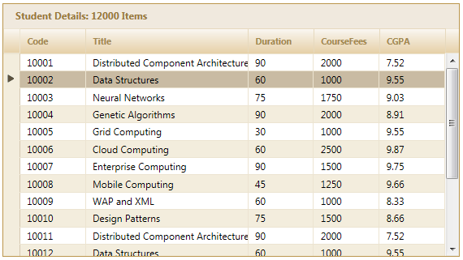

1. Create a model in the application.
2. Add the following code in the Index.aspx file to create the Grid control in the view.
|
[ASPX]
<%=Html.Syncfusion().Grid<Order>("Grid1", "GridModel", column => { column.Add(p => p.OrderID).HeaderText("Order ID"); column.Add(p => p.CustomerID).HeaderText("Customer ID"); column.Add(p => p.ShipCountry).HeaderText("Ship Country"); column.Add(p => p.OrderDate).HeaderText("Order Date").Format("{OrderDate:dd/MM/yyyy}"); column.Add(p => p.Freight).HeaderText("Price").Format("{0:c}"); })%>
|
|
[Razor]
@{Html.Syncfusion().Grid<Order>("Grid1", "GridModel", column => { column.Add(p => p.OrderID).HeaderText("Order ID"); column.Add(p => p.CustomerID).HeaderText("Customer ID"); column.Add(p => p.ShipCountry).HeaderText("Ship Country"); column.Add(p => p.OrderDate).HeaderText("Order Date").Format("{OrderDate:dd/MM/yyyy}"); column.Add(p => p.Freight).HeaderText("Price").Format("{0:c}"); }).Render(); )}
|
3. Create a GridPropertiesModel in the Index action.
4. To enable/disable virtual scrolling, set the AllowVirtualScrolling property as shown in the code snippets below:
|
Controller
/// <summary> /// Used for rendering the grid initially. /// </summary> /// <returns>View page; it displays the grid.</returns> public ActionResult Index() { GridPropertiesModel<Order> gridModel = new GridPropertiesModel<Order>() { DataSource = new NorthwindDataContext().Orders.Take(200).ToList(), Caption = "Orders", ----- }; gridModel.Scrolling.AllowVirtualScrolling = true;
gridModel.Scrolling.VirtualScrollMode = VirtualScrollMode.Facebook; // Configuring virtual scroll modes.
ViewData["GridModel"] = gridModel; return View(); }
/// <summary> /// Paging/editing/filtering requests are mapped to this method. This method invokes the HtmlActionResult /// from the grid and the required response is generated. /// </summary> [AcceptVerbs(HttpVerbs.Post)] public ActionResult Index(PagingParams args) { IEnumerable data = new NorthwindDataContext().Orders.Take(200).ToList(); return data.GridActions<Order>();
}
|
5. Run the application. You can see the grid with the initial records loaded and on scrolling, the required data is loaded.

Figure 228: Initial Items Loaded in the Facebook Mode